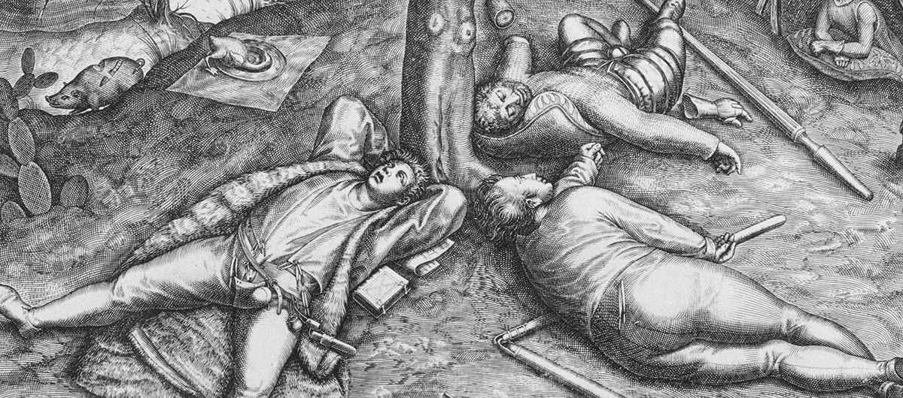

La Jungle de Dunkerque
(le voyage d'un réfugié vers Londres)
L’endurance du désir
Le film de Payam Maleki sur le voyage d’un réfugié iranien vers Londres commence par un geste : prendre la main sur l’image verticale du téléphone portable pour poser sur le jeune Ahmad un regard cinématographique.
Épuisement à la frontière de la Macédoine ; Ahmad galère dans la boue, en compagnie de son ami Reza. La télévision est là qui, sûrement, informe. Une productrice est là aussi, qu’il insulte en passant. C’est sa manière de parler, et pas seulement aux femmes. Ces images qu’il prend lui-même sont adressées aux Iraniens qui auraient encore l’idée de partir. L’exil, c’est s’en prendre plein le cul. Et on lui tient l’appareil pour qu’il montre la fente à la couture de son pantalon. Histoire ordinaire d’un migrant. Pourtant le ton frappe d’emblée. La liberté de propos, l’adresse, le rapport au corps disent plus que ce qu’il énonce. Payam Maleki s’engage alors dans l’aventure, pour ouvrir une brèche dans la représentation du jeune homme et de son parcours, qui laissera entrevoir autre chose qu’un désastre contemporain.
Un travelling suit Ahmad dans les couloirs du centre d’accueil des migrants, à Amiens, jusque dans la chambre de Reza qui l’héberge. Payam Maleki, par la maîtrise de ses cadres mouvants, se tient au plus proche des jeunes hommes, qui occupent l’espace à leur guise. Il n’y a pas de structure ni de tension dramatiques dans ce film, pas de suspense. Les scènes sont comme des moments de vie, à vif, des discussions au fil des repas préparés et des déplacements dans les villes. Une chorégraphie de mouvements et de paroles. Ce sont eux qui semblent mener la danse, contents qu’on leur laisse — enfin ! les coudées franches et le verbe débridé. Ils en profitent avec une impudeur provocante. Mais une douce présence nous fait rester là. Leurs visages en gros plan, en noir et blanc, se nimbent imperceptiblement d’une aura cinématographique. On se prend à les voir comme les ragazzi de Pasolini : de jeunes gars pas forcément aimables, un peu prétentieux, bêtement virils, dont le cinéaste accueille l’insolente irrévérence. Et voilà que ça nous déplace ! On n’est pas là pour compatir, pour apprendre comment ils vivent, ces gens-là. Nous ne rencontrerons pas un autre, ce serait trop confortable. Nous allons suivre pendant trois heures Ahmad et Reza, sans connaître ni leurs noms de famille ni leur histoire. Ils nous feront toucher du doigt l’arrachement au pays natal, la quête d’un lieu où vivre, par la manière dont ils en parlent.
Car Ahmad ne cesse de prendre la parole : il conseille sur le pays le plus propre, le plus apte à donner des papiers ; il précise qu’il faut être un Iranien homosexuel ou converti au christianisme pour obtenir un droit de séjour ; dénonce la « radinerie » des Français ; s’emporte violemment contre le colocataire de Reza rétif à l’accueillir. Il garde le cap, il trace sa route. Comme si pour garder vivace l’impulsion qui le mènera à Londres, il taisait la réalité, toutes les embûches de son parcours de migrant. Pourtant, il ne cesse de répéter à ses « compatriotes » de ne pas partir, s’ils veulent éviter de « se faire prendre par derrière » , « les couilles pleines. » Il évoque inlassablement sa débandade, métaphore à ses yeux de l’impuissance. Car Ahmad veut une réussite économique et la liberté individuelle de jouir sans entrave :
Voilà ce que je cherche : réjouissance et festivité.
Picoler, fumer des cigarettes, faire la fête.
Payam Maleki cherche, lui, patiemment à entendre autre chose que des propos dictés par le formatage du monde contemporain. La première remarque qu’Ahmad fait à Payam est qu’il ne sert à rien de perdre son temps à faire un « navet », qu’il lui faudrait de l’argent. Une des dernières, de filmer en Full HD. Il semble ne connaître que les réseaux sociaux et les médias ; sa façon de se présenter s’adapte à leurs clichés.
Dans la durée du film, on sentira combien ses propos sur son « manque de chatte » et sur « sa bite » en berne disent l’amoindrissement du désir. L’exil est mouvement, recherche d’autres choses, une tension vers l’autre. Du désir en acte. Mais dans cette quête d’Eldorado, sa boussole s’est affolée. Pour Payam Maleki, comme jadis pour Pasolini, ce désir est malade, vicié par une volonté de puissance et de satisfaction consuméristes. Il se mue en chancre qui creuse, en vide qui mine tout. Corps et cœur amoindris, blessés tout ensemble. Dans la chambre, les trois garçons s’amusent de ce qu’il leur devra s’il passe en Angleterre : « Scène de sexe avec Ahmad ! » Mais Ahmad ne leur répond pas. Il est parti dans une autre région du sentiment. Il écoute une chanson d’Azerbaïdjan, la beauté d’un chant d’amour porté par une voix de femme. Les chansons qu’ils serinent, celles qu’ils écoutent sont des romances faites des mots qui leur manquent.
L’oiseau qui est mon cœur ne peut plus chanter par jalousie
Ne sait plus sur quelle branche se poser.
Ils sont, ne leur déplaise, comme ce voisin sourd et muet qu’ils rejettent violemment, incapables de formuler de quoi nouer un lien. Quand Ahmad évoque l’Iran, il parle des relations amoureuses que ce pays rend impossibles. Après un geste grivois, il se prend à dire : « Ça me saoule, je n’étais pas comme ça avant. » Les propos crus sur ses démangeaisons génitales sont repris de séquence en séquence, mais Payam Maleki file avec pudeur le motif du sexe blessé. Il parvient à rendre poignant le plan le plus obscène du film. Quelque chose de sublime est mis à nu : la confiance que le jeune homme accorde enfin au cinéaste. L’espoir d’une relation véritable possible au delà de l’exposition médiatique. On comprend pourquoi Payam Maleki cite Pasolini au seuil de son film :
Le cinéma est une explosion de mon amour pour la réalité.
Son film sera l’expression palpitante de son amour pour ces hommes. Il laisse percevoir des éclats de désirs purs, intimes, encore vierges et intacts. Il existe une part de l’individu que la violence du monde n’a pas atteint.
Payam est leur hôte, mais il habite aussi le film. Étrange matière que ce film d’ailleurs, où le cinéaste semble progressivement plonger. Film aux frontières poreuses. Payam Maleki affirme à plusieurs reprises sa présence « derrière la caméra », sa volonté de maîtrise. Mais, par moments, sans que l’on s’en rende véritablement toujours compte, on est dans l’œil du cinéaste. La caméra se glisse dans le film qui sans cesse menace de le rejeter comme un corps étranger. Extérieur / noir : Jungle de Dunkerque, au cœur du film. Payam détache dans un halo de lumière les visages et les paroles d’autres réfugiés iraniens qui évoquent l’économie souterraine des jungles. À quoi sert de parler encore des rixes, des trafics, de xénophobie et de violence policière ? À quoi leur sert de raconter, quand des images ont été prises et déjà envoyées sur le net ? C’est que quelque chose se passe ici : le partage sensible d’une expérience. Le cinéaste, les spectateur·rice·s, les exilés, prêtent l’oreille ensemble, à la veillée, aux propos échangés, repris, contestés, peut-être fabulés. Pour que soit possible cette écoute-là, inouïe, Payam a payé de sa personne. Pas comme les journalistes dont ces hommes évoquent les déboires. « L’étudiant » comme ils l’appellent, un brin ironiques, l’intellectuel, vomit ses tripes dans le noir de la nuit après avoir consommé avec eux du crystal meth. Il est dépossédé tout à la fois de sa caméra et de son corps. La jungle redevient cet espace qui l’exclut, et perd ce qu’elle avait retrouvé furtivement : le sens premier en farsi, celui de forêt, celui qui permettait une autre forme de communauté. Il s’agit d’une défaite. Le cinéaste échoue à se mouvoir avec sa caméra dans l’obscur de leur vie.
Cherchons donc les expériences qui se transmettent encore par-delà tous les “spectacles” achetés et vendus autour de nous, par-delà l’exercice des règnes et la lumière des gloires […]. Le cours de l’expérience a chuté, mais il ne tient qu’à nous, dans chaque situation particulière, d’élever cette chute à la dignité, à la “beauté nouvelle” d’une chorégraphie, d’une invention de formes.
Georges Didi-Huberman, Survivance des lucioles
Le film va progressivement au corps-à-corps avec ces vies meurtries, ces désirs dévoyés par les délires de l’époque. Il cherche à attraper les sentiments, susciter des rencontres. Mais c’est fragile. Et la fin du film, brutale. Ahmad reprend son leitmotiv : « Ce sera avec le cul déchiré, si on arrive un jour… » La nuit les dévore et les lumières crues sont celles des phares d’une camionnette de nettoyage. Cut sec, et l’image est à nouveau celle du téléphone portable : il a fini par arriver.
Marie Clément
Image : The Land of Cockaigne • Pieter van der Heyden • 1570 ? • Harris Brisbane Dick Fund, 1926